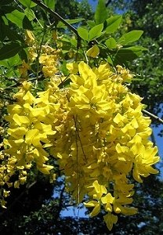

Woher kommt der Name Goldregen?
  Die Blüten sind goldgelb.
Die Blüten sind goldgelb.
Sie hängen in dichten Trauben herab und sehen aus wie goldene Wassertropfen in einem Wasserfall oder einem Regenschauer.
Auf Englisch heißt der Goldregen
Golden Chain Tree (Goldkettenbaum).